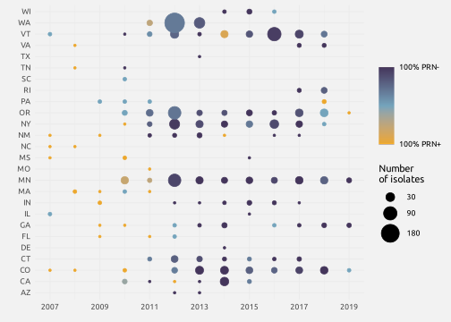

Figure: Number of isolates per state and per year
library(ggplot2)
library(extrafont)
loadfonts(quiet = T)
data_prn <- read.table("data/data-lefrancq-2022.txt", header = T, sep = "\t")
data_prn <- data_prn[data_prn$country == "US", ]
data_prn <- na.omit(data_prn[, c("year_isolated", "region", "prn_def")])
data_prn <- data_prn[data_prn$year_isolated >= min(data_prn$year_isolated[data_prn$prn_def == "-"]), ]
data_prn$region[data_prn$region == "New York State"] <- "New York"
data_prn$region[data_prn$region == "Washington State"] <- "Washington"
states_names <- read.table("data/states-names.txt", h = T, sep = "\t")
for (name in states_names$long) {
data_prn$region[data_prn$region == name] <- states_names$short[states_names$long == name]
}
table_prn <- as.data.frame(table(data_prn$year_isolated, data_prn$region, data_prn$prn_def))
table_prn <- data.frame(year = as.numeric(as.character(table_prn$Var1[table_prn$Var3 == "-"])),
state = as.character(table_prn$Var2[table_prn$Var3 == "-"]),
prop = table_prn$Freq[table_prn$Var3 == "-"] /
(table_prn$Freq[table_prn$Var3 == "-"] +
table_prn$Freq[table_prn$Var3 == "+"]),
freq = table_prn$Freq[table_prn$Var3 == "-"] +
table_prn$Freq[table_prn$Var3 == "+"])
ggplot(table_prn) +
geom_point(aes(x = year,
y = state,
size = ifelse(freq == 0, NA, freq),
color = prop)) +
scale_size(range = c(1, 10), breaks = c(30, 90, 180)) +
scale_color_gradient2(low = "#ECA72C", mid = "#74A4BC", high = "#44355B", midpoint = 0.5,
na.value = "white", breaks = c(0, 1), labels = c("100% PRN+", "100% PRN-")) +
scale_x_continuous(breaks = seq(2007, 2019, 2)) +
guides(color = guide_colorbar(ticks = FALSE)) +
labs(size = "Number\nof isolates", x = element_blank(), y = "", color = element_blank()) +
theme_minimal() +
theme(text = element_text(family = "Ubuntu"))